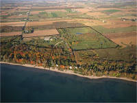
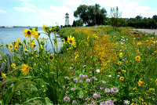
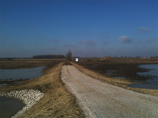

What are stopover sites, and why do they need our attention?
For migratory birds, stopover sites provide essential food resources during a part of the life-cycle when mortality may be high. Stopover habitat has been neglected in many conservation efforts to protect migratory birds, in part because habitats are used for a short time and use can vary depending on many factors, such as weather conditions during migration. The Great Lakes, particularly coastal and nearshore areas, provide globally important stopover sites for waterfowl, shorebirds, songbirds, hawks and owls and other waterbirds, such as loons. Much of the Great Lakes coastal aquatic and terrestrial landscapes that once supported migrating birds has been lost or degraded, yet the region supports hundreds of millions of migrants during both spring and fall migration.What we did:
The objective of this study was to identify and score attributes of areas that serve as important stopover sites for migratory birds within 25 km (15 miles) of the shorelines of Lakes Michigan, Huron, Erie, and Ontario, and connecting water bodies, in the US and Canada, and then map potential stopover habitats across the region based on available GIS data layers.
The criteria used to predict locations of stopover sites are based on a literature review and unpublished information gained from reports and regional stopover experts. (Published resources we used, plus many others, are available in the stopover bibliography). We identified attributes associated with stopover sites that could be mapped with regionally (US and Canada) available data layers, developed criteria to score these attributes, and then produced maps based on these scores to indicate the relative importance of stopover sites in our study area. For complete methods, please see the methods section of the final report and/or the metadata, both available on the Downloads page.
To design this web portal, we studied a range of existing web portals and interactive web maps, not limited to those addressing natural resources. Through this process we gathered a list of features related to design, content, and functionality that we thought were useful for building our web portal. We also sought input from a range of potential users via survey questionnaire regarding what content and functionality would be helpful to them. We then prioritized these lists of features via brainstorming and group decision making techniques to develop the prototype version of this web portal. Finally we conducted a facilitated workshop with a small group of users to test the prototype and gather their feedback to further improve it. The feedback gathered via workshop was further prioritized via brainstorming and group decision making techniques to implement essential features, which has resulted in the current version of this web portal.
What we found:
Our analysis suggests that areas close to the Great Lakes shorelines are important stopover sites for all groups of birds, including landbirds, shorebirds and waterfowl. Landbirds are most concentrated within a few miles of the shoreline, migrating waterfowl are most common in nearshore shallow waters of the Great Lakes, and a number of shorebirds use Great Lakes shorelines disproportionately to other habitats. For all bird groups, relatively extensive areas of habitat seem to be used more than smaller areas of habitat except for landbirds where small areas of habitat surrounded by development harbor high densities of birds. Check out the Map page to explore the results.Who was involved:
The Nature Conservancy collaborated with the U.S. Fish and Wildlife Service, many conservation organizations, universities, and corporations to predict the relative importance of different areas as stopover sites near Lakes Michigan, Huron, Erie and Ontario, and conntecting waters, to create this web portal. The Upper Midwest and Great Lakes Landscape Conservation Cooperative of the U.S. Fish and Wildlife Service supported development of the predictive model and this website.
This web portal reflects the contributions of many partners, beginning with articulation of stopover models in the western Lake Erie basin of Ohio and Michigan, and continuing with development of models in Chicago Wilderness; Great Lakes basins of Wisconsin; Saginaw Bay, Michigan; Lake Huron, Erie and Ontario regions of Ontario; and the Lake Ontario watershed of New York. The many people who provided expertise in developing these models, and those who applied the models to work on the ground, have directly and indirectly shaped the content and organization of the web portal. We are also very grateful to the researchers who have studied stopover sites and made their information available to us through publications and personal communication.
We gratefully acknowledge the efforts of workshop participants who critiqued the functionality and content of a draft web portal during a workshop held in 2013. These collaborators include Amanda Conover (Ohio Bird Conservation Initiative), Julie Craves (University of Michigan-Dearborn), Kim Grveles (Wisconsin Department of Natural Resources), Ron Huffman (Ottawa National Wildlife Refuge), Kevin Joyce (Black Swamp Conservancy, OH), Rob Krain (Black Swamp Conservancy, OH), Sarah Mabey (Hiram College, OH), Judy Pollock (Audubon Chicago Region), Bradly Potter (Upper Midwest/Great Lakes Landscape Conservation Cooperative), George Raber (University of Southern Mississippi), Matt Shackelford (DTE Energy), and Mark Shieldcastle (Black Swamp Bird Observatory). The website is currently hosted by the University of Southern Mississippi.
What we plan to do next:
Characterizing suitable stopover habitat and then making the information widely available are important initial steps toward conservation of migratory birds. We will incorporate results from this study into other planning and implementation conservation efforts, such as LaMPs and other basinwide planning projects (TNC’s blueprints), to ensure that the study is used to enhance survivorship of birds migrating through the Great Lakes region and the quality of life for residents of the Great Lakes region.What we hope you will do next:
Use our maps of predicted stopover sites, underlying data layers, and analysis tools to rank and compare stopover sites for conservation or restoration, and get help doing so. Download our data predicting stopover habitat throughout the region, and find out more about how they were produced. Tap into other resources needed to make conservation decisions, such as links to other relevant data sources for your area of interests and information on what other groups are working on. See these maps and data in action and understand how others are using them. And then add your story to our website by contacting us to let us know how to link to your work on our Resources and/or Action pages. Help us keep this portal current and vibrant by sharing your experiences and knowledge! And please share this portal with others you think might find it useful.Important things to keep in mind when using the maps:
When using maps produced with this project to identify potential stopover habitat, users should keep in mind the following: 1) the maps only take into account landscape variables that we incorporate within a GIS framework because fine detail about vegetation composition and structure were not available throughout the region, 2) there are errors in the land cover data bases used, 3) we used a minimum sized area of approximately 2.5 acres (1 ha) to describe habitat and so areas of habitat smaller than 2.5 acres may not be depicted in our maps, and 4) our maps emphasize distribution of spring migrants rather than fall migrants because more data were available to describe stopover sites used in spring compared to fall.Not what you were looking for? Looking for information about this web portal and how to use it instead? Click here

Caroline Lake, Wisconsin. High quality stopover site with diverse vegetation cover adjacent to water. ©TNC archives |

Scarlet Tanager. ©TNC archives |
|

Forest Beach Migratory Preserve, Wisconsin. Photo credit: © Luke Wuest |

DTE Energy. Habitat creation for migrating landbirds at the River Rouge Power Plant along the Detroit River. ©TNC archives |

Ottawa National Wildlife Refuge. Creation of stopover habitat for waterfowl and shorebirds. Photo credit: ©James Cole |